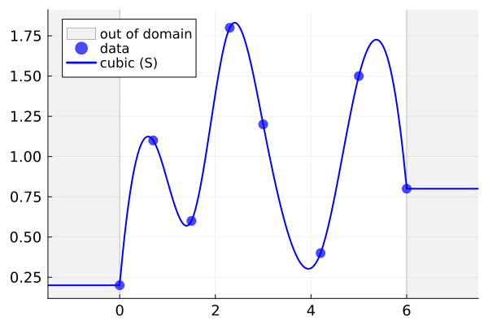
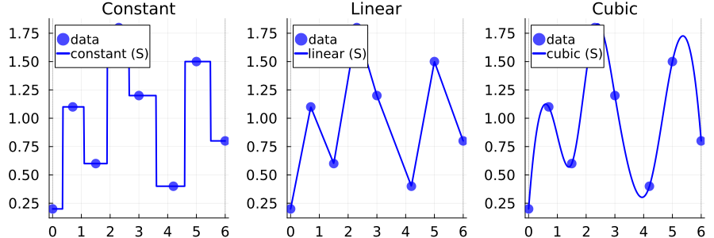
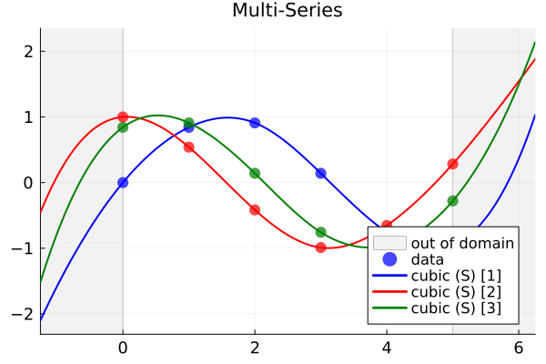
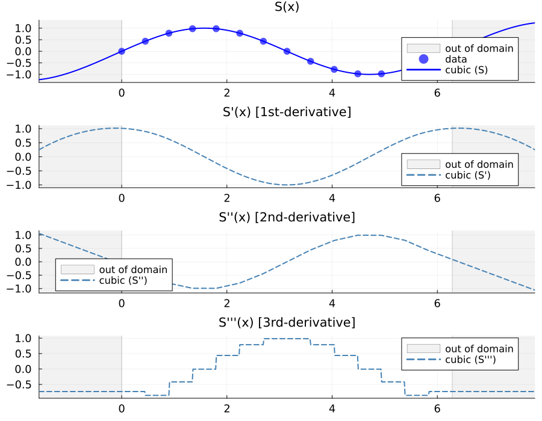
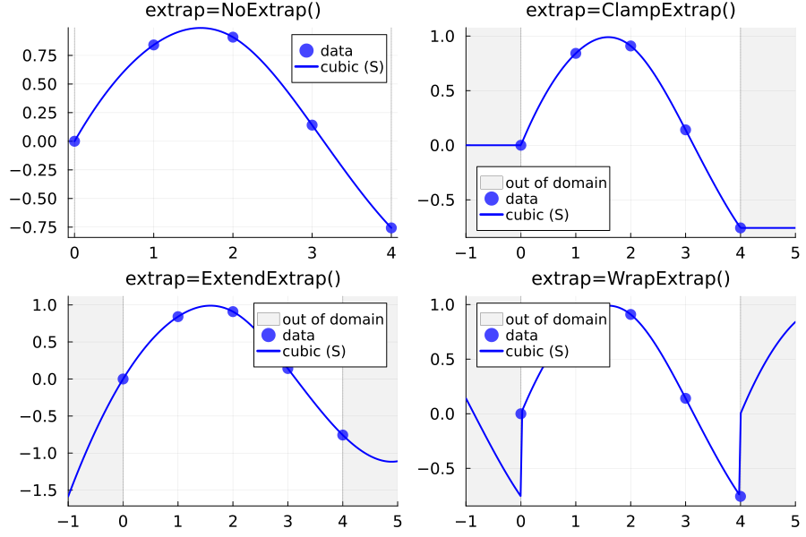
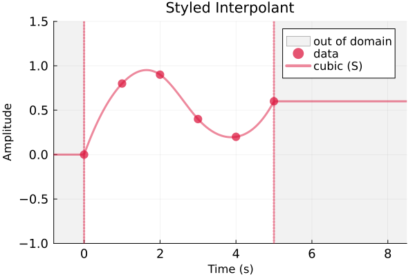
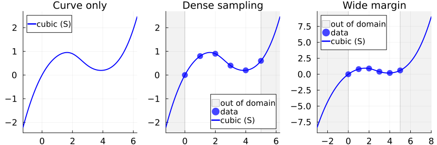
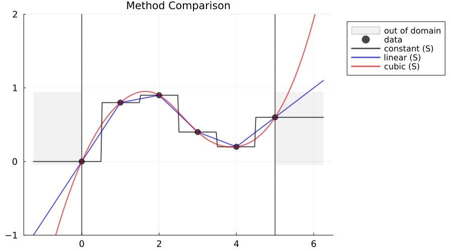
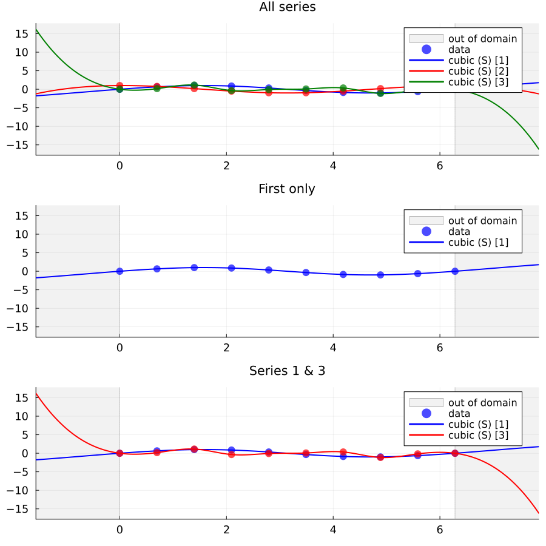

Visualization
FastInterpolations.jl provides built-in Plots.jl recipes for automatic visualization of interpolants. Simply call plot() on any interpolant to generate publication-ready figures.
Quick Start
using FastInterpolations
using Plots
# Create sample data
x = [0.0, 0.7, 1.5, 2.3, 3.0, 4.2, 5.0, 6.0]
y = [0.2, 1.1, 0.6, 1.8, 1.2, 0.4, 1.5, 0.8]
# Create interpolant and plot
itp = cubic_interp(x, y; extrap=ClampExtrap())
plot(itp)
The recipe automatically generates:
- Interpolation curve — high-resolution spline visualization
- Data points — original scatter data (auto-hidden for large datasets)
- Domain boundaries — dashed vertical lines at
x[1]andx[end] - Out-of-domain shading — gray regions beyond the data domain (when extrapolation enabled)
Basic Usage
Single-Series Interpolants
plot(
plot(constant_interp(x, y), title="Constant"),
plot(linear_interp(x, y), title="Linear"),
plot(cubic_interp(x, y), title="Cubic"),
layout=(1, 3), size=(900, 300)
)
Multi-Series Interpolants
x = [0.0, 1.0, 2.0, 3.0, 4.0, 5.0]
Y = [sin.(x) cos.(x) sin.(x .+ 1)] # 3 series
sitp = cubic_interp(x, Series(Y); extrap=ExtendExtrap())
plot(sitp, title="Multi-Series")
Derivative Views
x = range(0, 2π, 15)
itp = cubic_interp(collect(x), sin.(x); extrap=ExtendExtrap())
plot(
plot(itp, title="S(x)"),
plot(deriv1(itp), title="S'(x) [1st-derivative]"),
plot(deriv2(itp), title="S''(x) [2nd-derivative]"),
plot(deriv3(itp), title="S'''(x) [3rd-derivative]"),
layout=(4, 1), size=(900, 700)
)
Extrapolation Modes
x = [0.0, 1.0, 2.0, 3.0, 4.0]
y = sin.(x)
plot(
plot(cubic_interp(x, y; extrap=NoExtrap()), title="extrap=NoExtrap()"),
plot(cubic_interp(x, y; extrap=ClampExtrap()), title="extrap=ClampExtrap()"),
plot(cubic_interp(x, y; extrap=ExtendExtrap()), title="extrap=ExtendExtrap()"),
plot(cubic_interp(x, y; extrap=WrapExtrap()), title="extrap=WrapExtrap()"),
layout=(2, 2), size=(900, 600)
)
Advanced Usage
All standard Plots.jl attributes work alongside our custom recipe options.
Plots.jl Attributes
x = [0.0, 1.0, 2.0, 3.0, 4.0, 5.0]
y = [0.0, 0.8, 0.9, 0.4, 0.2, 0.6]
itp = cubic_interp(x, y; extrap=ClampExtrap())
plot(itp;
title="Styled Interpolant",
xlabel="Time (s)", ylabel="Amplitude",
ylims=(-1.0, 1.5),
xlims=(-0.8, 8.5),
linewidth=3,
alpha=0.5,
color=:crimson,
legend=:topright,
)
Recipe Options
In addition to standard Plots.jl attributes, the recipe provides custom options:
| Option | Type | Default | Description |
|---|---|---|---|
show_data | Bool or nothing | nothing (auto) | Show data points. Auto-hidden when n ≥ 200 |
show_bounds | Bool | true | Show vertical lines at domain boundaries |
show_outside | Bool | true | Show gray shading for out-of-domain regions |
samples | Int or nothing | nothing (auto) | Curve sample count |
domain_margin | Real or nothing | nothing (auto) | Domain extension for visualization |
series_idx | Symbol, Int, Range, Vector | :all | Which series to plot (multi-series only) |
Use help_plot() to discover options interactively—it displays options while simultaneously rendering the plot, making it easy to experiment with different settings:
julia> help_plot(itp; samples=500, show_bounds=false)
CubicInterpolant
show_data::Union{Nothing, Bool} = nothing # Show original data points (default: auto, hidden when n ≥ 200)
show_bounds::Bool = false # Show domain boundary lines
show_outside::Bool = true # Show out-of-domain shading
samples::Union{Nothing, Integer} = 500 # Number of curve samples (default: auto)
domain_margin::Union{Nothing, Real} = nothing # Domain extension margin (default: auto)For detailed usage, see HelpPlots.jl.
Customization Examples
itp = cubic_interp(x, y; extrap=ExtendExtrap())
plot(
plot(itp; show_data=false, show_bounds=false, show_outside=false, title="Curve only"),
plot(itp; samples=1000, title="Dense sampling"),
plot(itp; domain_margin=3.0, title="Wide margin"),
layout=(1, 3), size=(900, 300)
)
Overlaying Interpolants
p = plot(constant_interp(x, y; extrap=ExtendExtrap()); color=:black, alpha=0.7, lw=2)
plot!(p, linear_interp(x, y; extrap=ExtendExtrap()); show_data=false, show_bounds=false, show_outside=false, color=:blue, alpha=0.7, lw=2)
plot!(p, cubic_interp(x, y; extrap=ExtendExtrap()); show_data=false, show_bounds=false, show_outside=false, color=:red, alpha=0.7, lw=2)
plot!(p; title="Method Comparison", legend=:outertopright, xlims=(-1.5, 6.5), ylims=(-1.0, 2.0), size=(900,500))
Series Selection
x = range(0, 2π, 10)
Y = [sin.(x) cos.(x) tan.(x) ./ 5]
sitp = cubic_interp(collect(x), Series(Y); extrap=ExtendExtrap())
plot(
plot(sitp; series_idx=:all, title="All series"),
plot(sitp; series_idx=:first, title="First only"),
plot(sitp; series_idx=[1, 3], title="Series 1 & 3"),
layout=(3, 1), size=(900, 900)
)
See Also
- Extrapolation: How extrapolation modes affect visualization
- Derivatives: Analytical derivative computation
- Series Interpolant: Multi-series interpolant usage